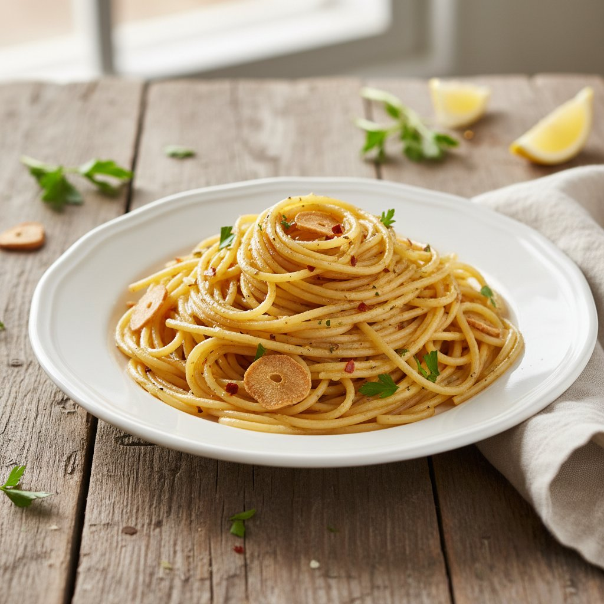

Macarrão ao Alho e Óleo
Sabe aquele clássico que nunca falha e salva qualquer dia corrido? O Macarrão ao Alho e Óleo é o equilíbrio perfeito entre simplicidade e sabor marcante. Uma massa soltinha, dourada no alho crocante e finalizada com um fio de azeite generoso.
Por que essa receita é um Salva-Vidas?
O melhor de tudo? Fica pronto num piscar de olhos, custa quase nada e suja apenas uma panela! A combinação de alho dourado no azeite cria um molho naturalmente cremoso e intenso que envolve cada fio da massa — sem precisar de nenhum ingrediente industrializado.
É a receita perfeita para aquele dia que o cansaço bateu forte, a geladeira está quase vazia e você precisa de algo gostoso, nutritivo e rápido. Com ingredientes que quase todo mundo tem em casa, em 12 minutos você tem um prato digno de restaurante italiano.
Modo de Preparo
-
1
Em uma panela, cozinhe o macarrão em água fervente com sal até ficar al dente. Reserve uma concha da água do cozimento e escorra a massa.
-
2
Na mesma panela, adicione um bom fio de azeite (ou óleo) e doure os dentes de alho fatiados ou picados em fogo baixo para não queimar.
-
3
Volte o macarrão para a panela, misture bem ao alho dourado e adicione um pouquinho da água reservada para criar uma emulsão brilhante. Finalize com ervas picadas e sirva imediatamente.